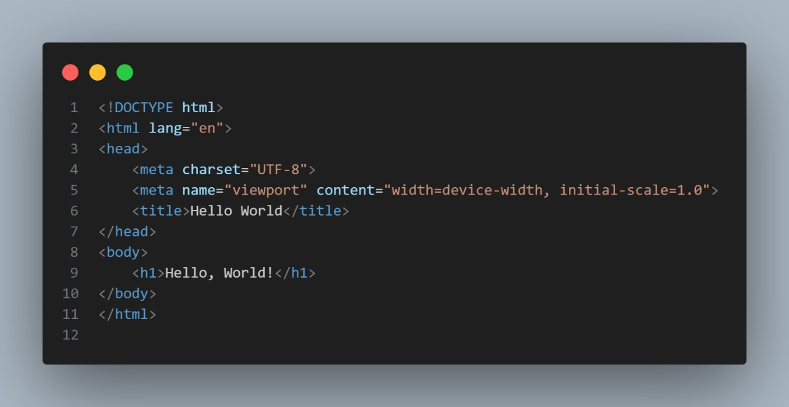

Tips Belajar Pemrograman untuk Pemula
Belajar pemrograman adalah langkah awal yang menantang tetapi sangat bermanfaat. Pemrograman memungkinkan Anda untuk membuat aplikasi, memecahkan masalah, dan memahami cara kerja teknologi di sekitar kita.
Langkah-langkah Awal
Berikut adalah beberapa tips untuk membantu Anda memulai perjalanan belajar pemrograman:
- Pilih Bahasa Pemrograman yang Mudah: Mulailah dengan bahasa seperti Python atau JavaScript yang mudah dipahami oleh pemula.
- Pelajari Dasar-dasarnya: Kuasai konsep dasar seperti variabel, tipe data, perulangan, dan logika pemrograman.
- Gunakan Sumber Belajar Online: Platform seperti Codecademy, freeCodeCamp, atau YouTube memiliki banyak tutorial gratis.
- Praktik Secara Konsisten: Pemrograman adalah keterampilan yang harus sering dilatih. Cobalah membuat proyek kecil setiap minggu.
- Bergabung dengan Komunitas: Temukan komunitas online atau offline untuk berbagi pengalaman dan belajar dari orang lain.
Mengapa Belajar Pemrograman Itu Penting?
Di era digital saat ini, pemrograman adalah salah satu keterampilan paling berharga. Dengan memahami pemrograman, Anda dapat:
- Menciptakan aplikasi atau situs web Anda sendiri.
- Mendapatkan pekerjaan di industri teknologi.
- Memecahkan masalah dengan solusi berbasis teknologi.
Jangan takut untuk gagal. Pemrograman melibatkan banyak percobaan dan kesalahan. Teruslah belajar, dan nikmati prosesnya!